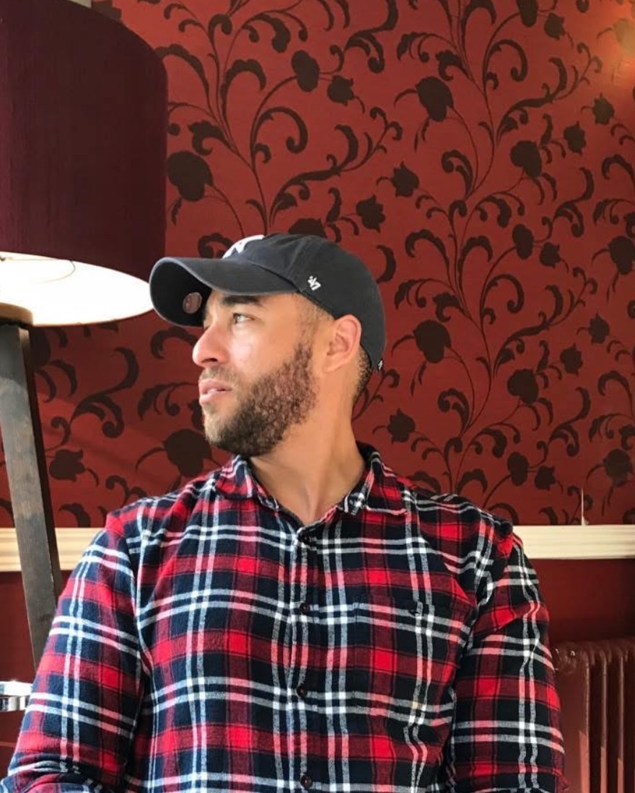

Kairos Rejuvenation · Hagerstown, MD
Aaron
Torrence
Co-owner. Operator. Health coach.
I run the clinic so physician-led care actually reaches people — then I stay with patients on the habits that make a plan work in real life.

About
The person behind the floor, the calendar, and the follow-through.
Kairos Rejuvenation is a physician-led medical aesthetics and wellness clinic in Hagerstown. Medical direction sits with Dr. Kristina Torrence, MD, MPH, board-certified Medical Doctor / OB-GYN. I am co-owner. I manage operations — how the clinic runs day to day — and I coach patients who need the plan to survive a normal week.
Clients meet a calm, coordinated practice. LinkedIn sees the other half: systems, staffing rhythm, patient experience, and the unglamorous work that keeps hormones, weight-loss, aesthetics, and labs from colliding.
I am not a prescribing clinician. Coaching complements medical visits. It does not replace them.
Health coaching
Medical plans work better with real-life support.
I help patients turn clinical recommendations into weekly habits — sleep, nutrition basics, movement, and consistency — especially alongside hormone or metabolic pathways.
-
Alongside the protocol
Useful with men’s or women’s hormone membership and Weight Loss Membership when lifestyle is the bottleneck.
-
Coordinated, not DIY
Always coordinated with clinical guidance — no DIY hormone or GLP-1 advice.
-
Complements medicine
Complements physician-led protocols; does not replace medical visits, labs, or Dr. Torrence’s clinical decisions.
For LinkedIn & partners
I treat the clinic like an operating system.
-
01
The floor
Hours, huddle, check-in, aftercare, and the path a patient actually walks — not the path on a slide.
-
02
The stack
Booking, memberships, labs, and pharmacy coordination so staff are not living in five dashboards.
-
03
The standard
Physician-led means clinical decisions stay clinical. My job is to make that standard operationally possible.
The practice
Kairos Rejuvenation
Physician-led hormones, medical weight loss, peptides, aesthetics, IV, and precision labs in Hagerstown — with telehealth in eligible states. Founded 2023. Directed by Dr. Kristina Torrence, board-certified Medical Doctor.
Connect
Clients book the clinic. Colleagues can reach me there too.
12916 Conamar Dr, Suite 105
Hagerstown, MD 21742